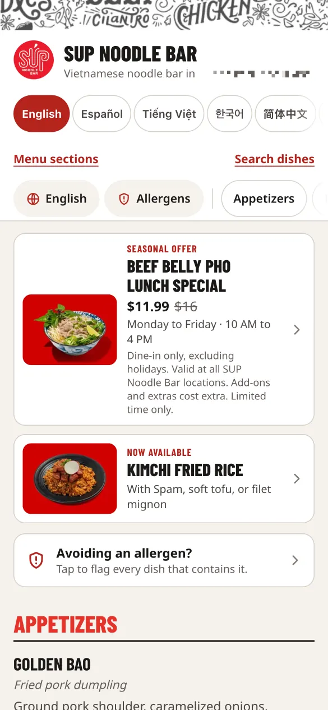
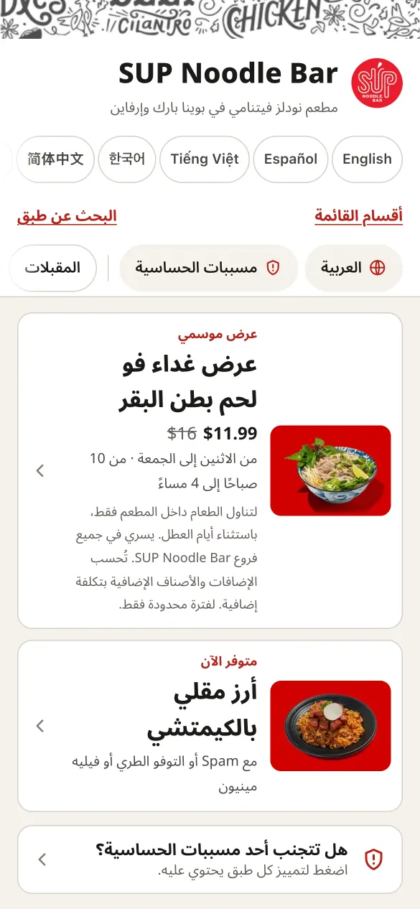
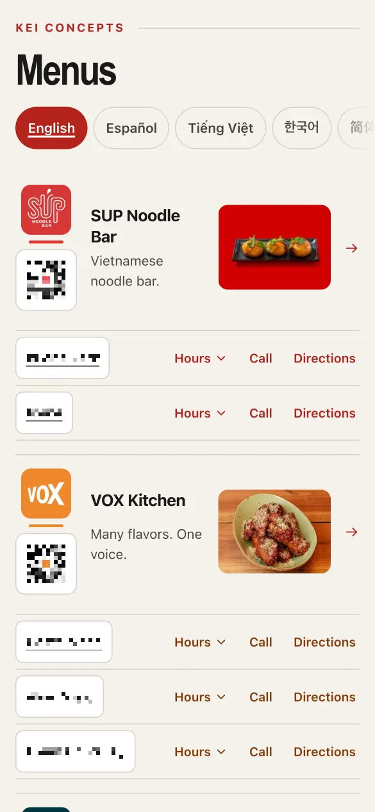
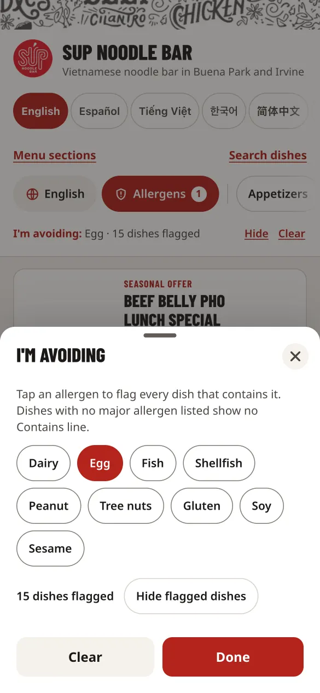
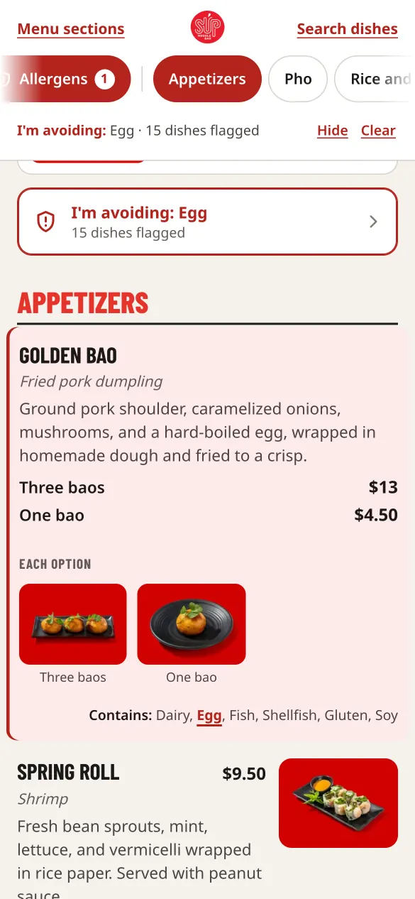
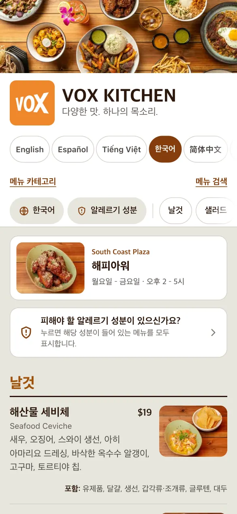

Multilingual QR menus


Restaurant guests read many languages, but most menus come in one. Guests scan a code at the table, read the menu in their own language, and flag the dishes that contain allergens they avoid. I built it on my own initiative for the multi-brand restaurant group where I work; working versions for all {{menus.brands}} brands are ready for the group’s review.
Includes: {{menus.languages}} languages, one-tap switching, right-to-left Arabic, Farsi and Urdu · allergen filter · each brand’s own colours and photos · print-ready PDFs in every language · QR codes per brand and location · one Python build pipeline
{{menus.brands}} brands · {{menus.languages}} languages · a printable menu in every language for every brand
Stack: Python, HTML, CSS, JavaScript, GitHub Pages
See all six screens
{kind=link}

{kind=link}
{kind=link}
{kind=link}

{kind=link}

{kind=link}

What it does
- {{menus.languages}} languages, switched with one tap; Arabic, Farsi and Urdu flip the whole layout to read right to left.
- An allergen filter: tap an allergen to flag every dish that contains it, or hide those dishes entirely.
- Every brand keeps its own colours, logo and photos on the same system.
- Print-ready PDFs of every menu in all {{menus.languages}} languages, with typography rules for each script.
- QR codes for each brand and location that open the right menu from the table.
- One build pipeline (Python) generates the mobile site and every PDF.
{kind=link}
{kind=link}
{kind=link}
{kind=link}